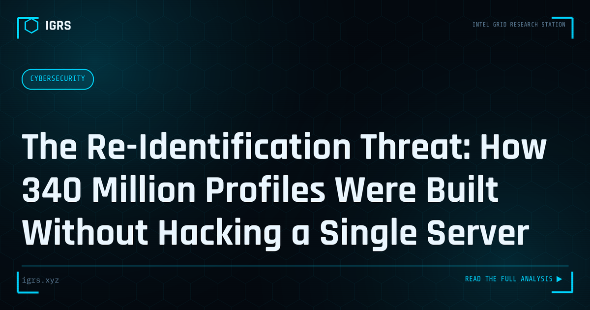

The Re-Identification Threat: How 340 Million Profiles Were Built Without Hacking a Single Server
| File No. | IGRS-066/2026 |
| Subject | Analysis of data aggregation and re-identification attacks using the OnlyFans mega-leak case as a case study |
| Category | OSINT Fundamentals |
| Author | Manuj Kumar Pandey |
| Published | 2026-06-12 |
| Reading time | 12 minutes |
A threat actor assembled 340 million user profiles linked to OnlyFans accounts without breaching OnlyFans directly — by stitching together old data breach dumps and public social media data. This is the re-identification threat, and it affects every platform that assumes breach-only exposure.
Data Aggregation and Re-Identification Attacks
Individual pieces of data may seem harmless in isolation, but when aggregated, they can reveal far more than intended — including the identities of people who believed themselves anonymous. Data aggregation and re-identification attacks combine multiple data sources to build detailed profiles and unmask individuals. Understanding these attacks is important for privacy, investigation, and defence. This guide explains how they work and their implications.
The Power of Aggregation
The core principle is that combining data sources reveals more than any single source. A piece of information that identifies no one on its own can, when combined with others, uniquely identify a person. Aggregating data from social media, public records, breaches, and other sources builds a composite picture that can expose identity, location, relationships, and private details. This is why data minimisation and privacy protection matter even for seemingly innocuous information.
How Re-Identification Works
| Technique | Method |
|---|---|
| Cross-referencing | Matching data across sources |
| Quasi-identifiers | Combining non-unique attributes |
| Linkage attacks | Connecting anonymous to known data |
| Pattern matching | Identifying by behaviour or style |
The Myth of Anonymity
Many people believe that removing names makes data anonymous, but re-identification attacks demonstrate this is often false. So-called anonymised data frequently contains quasi-identifiers — combinations of attributes like age, location, and other details that, taken together, uniquely identify individuals. Linking such data to other available information can re-identify people thought to be anonymous. This reality has profound implications for privacy and for how organisations must handle even de-identified data.
Linkage Attacks
A linkage attack connects an anonymous dataset to identifying information by matching shared attributes. If an anonymous record and a known record share enough characteristics, the anonymous individual can be identified. Famous demonstrations have re-identified individuals in supposedly anonymised datasets by linking them to public records. This technique shows why true anonymisation is difficult and why the existence of multiple data sources amplifies privacy risk for everyone.
Implications for Privacy and the DPDP Act
Re-identification has significant implications under India's DPDP Act 2026. Data that can be linked back to individuals remains personal data subject to protection, even if directly identifying fields are removed. Organisations must recognise that de-identification may not be sufficient if re-identification is possible, and must protect data accordingly. The aggregation risk also reinforces the principle of data minimisation — collecting and retaining less data reduces the raw material available for aggregation and re-identification.
Investigative and Defensive Dimensions
For investigators, aggregation is a legitimate technique — combining lawful sources to build a comprehensive picture of a subject. For defenders and privacy-conscious individuals, understanding aggregation informs protection: limiting the data shared across sources, recognising that anonymity is fragile, and minimising the footprint available for aggregation. The same principle that makes aggregation powerful for investigation makes it a privacy threat when used against individuals, underscoring the importance of controlling one's data exposure.
Protecting Against Aggregation
For Indian organisations and individuals, defending against aggregation and re-identification means minimising data collection and retention, recognising that anonymisation is often imperfect, protecting even de-identified data appropriately, and, for individuals, limiting the personal information shared across platforms and sources. As ever more data becomes available — through social media, breaches, and public records — the power of aggregation grows, making these protective measures increasingly important. Understanding that privacy is threatened not just by single exposures but by the combination of many seemingly harmless ones is essential to genuine data protection in an age of pervasive data availability.